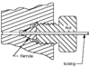

x-section
abstraction

Source: Wikipedia
Wikipedia Page (Something wrong with this association? Let us know.)
Wikidata Page (Something wrong with this association? Let us know.)
Occurs in:
- automobile_front_x-section__area
- drainage-basin_outlet_water_x-section__mean_of_depth
- drainage-basin_outlet_water_x-section__peak_time_of_depth
- drainage-basin_outlet_water_flowing_x-section__peak_time_of_volume_rate
- drainage-basin_outlet_water_x-section__peak_time_of_volume_flux
- drainage-basin_outlet_water_flowing_x-section__time_integral_of_volume_rate
- drainage-basin_outlet_water_x-section__time_max_of_mean_of_depth
- drainage-basin_outlet_water_flowing_x-section__time_max_of_volume_rate
- drainage-basin_outlet_water_x-section__time_max_of_volume_flux
- drainage-basin_outlet_water_flowing_x-section__time_min_of_volume_rate
- drainage-basin_outlet_water_flowing_x-section__volume_rate
- drainage-basin_outlet_water_x-section__volume_flux
- drainage-basin_outlet_water_x-section__width-to-depth_ratio
- drainage-basin_outlet_water_x-section_top__width
- channel_entrance_water_flowing_x-section__volume_rate
- channel_entrance_water_x-section__volume_flux
- channel_exit_water_flowing_x-section__volume-per-width_rate
- channel_exit_water_flowing_x-section__volume_rate
- channel_exit_water_flowing_x-section__volume-flow-rate-law_area_exponent
- channel_exit_water_flowing_x-section__volume-flow-rate-law_coefficient
- channel_exit_water_sediment~suspended_flowing_x-section__mass_rate
- channel_water_x-section__depth-vs-half-width_coefficient
- channel_water_x-section__depth-vs-half-width_exponent
- channel_water_x-section__domain_max_of_mean_of_depth
- channel_water_flowing_x-section__domain_max_of_volume_rate
- channel_water_x-section__domain_max_of_volume_flux
- channel_water_x-section__domain_min_of_mean_of_depth
- channel_water_flowing_x-section__domain_min_of_volume_rate
- channel_water_x-section__domain_min_of_volume_flux
- channel_water_x-section__hydraulic_radius
- channel_water_x-section__mean_of_initial_depth
- channel_water_x-section__max_of_depth
- channel_water_x-section__mean_of_depth
- channel_water_x-section__time_derivative_of_mean_of_depth
- channel_water_flowing_x-section__volume_rate
- channel_water_flowing_x-section__volume-flow-rate-law_area_exponent
- channel_water_flowing_x-section__volume-flow-rate-law_coefficient
- channel_water_x-section__volume_flux
- channel_water_x-section__wetted_area
- channel_water_x-section__wetted_perimeter
- channel_water_x-section__width-to-depth_ratio
- channel_water_x-section_top__width
- channel_x-section__area
- channel_x-section__depth-vs-half-width_coefficient
- channel_x-section__depth-vs-half-width_exponent
- channel_x-section__diameter
- channel_x-section__max_of_depth
- channel_x-section__max_of_elevation
- channel_x-section__min_of_elevation
- channel_x-section__perimeter
- channel_x-section__width-to-depth_ratio
- channel_x-section_parabola__leading_coefficient
- channel_x-section_top__width
- channel_x-section_trapezoid_bottom__width
- channel_x-section_trapezoid_side__flare_angle
- channel_x-section_trapezoid_side~left__flare_angle
- channel_x-section_trapezoid_side~right__flare_angle
- river-delta_channel~main_entrance_water_flowing_x-section__volume_rate
- river-delta_channel~main_entrance_water_x-section__volume_flux
- river-delta_channel~main_entrance_water_x-section__wetted_area
- river-delta_channel~main_entrance_water_x-section__wetted_perimeter
- river-delta_channel~main_entrance_water_x-section__width-to-depth_ratio
- river-delta_channel~main_entrance_water_x-section_top__width
- river-delta_channel~main_entrance_x-section__area
- river-delta_channel~main_entrance_x-section_top__width
- river-delta_distributary_outlet_water_x-section__mean_of_depth
- river-delta_distributary_outlet_water_flowing_x-section__volume_rate
- river-delta_distributary_outlet_water_x-section__volume_flux
- river-delta_x-section__area
- river-delta_x-section__dip_angle
- river-delta_x-section__strike_angle
- projectile_shaft_x-section__diameter
- projectile_x-section__area
- sea_surface_water_wave_crest_x-section_vertex__angle
- soil_x-section~horizontal_macropores__area_fraction
- soil_x-section~vertical_macropores__area_fraction
- storage-tank~open-top_outlet_x-section__area
- storage-tank~open-top_x-section~horizontal__area
- storage-tank~open-top_x-section~horizontal_circle__radius
- river_channel_water_x-section__width
- river_channel_water_x-section__height
- river_channel_water_x-section_top__width
- river_channel_water_x-section__max_of_depth